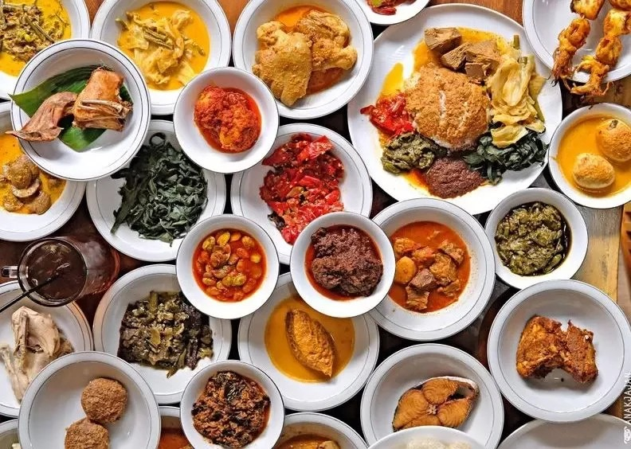
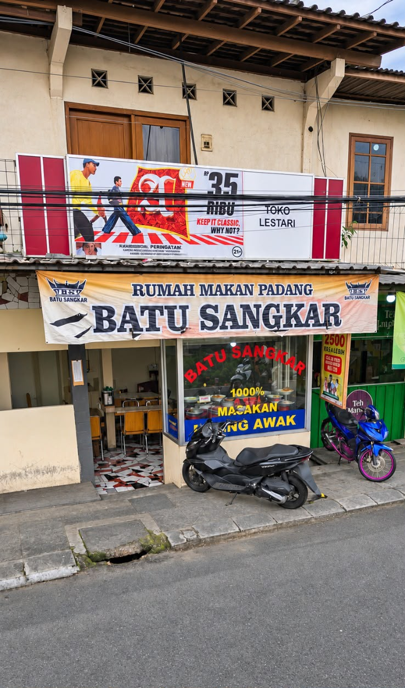

Selamat Datang di Rumah Makan Batu Sangkar
Nikmati Cita Rasa Khas Minang
Rumah Makan Batu Sangkar

Menghadirkan Cita Rasa Minang Sejak 2010
Rumah Makan Batu Sangkar berdiri pada tahun 2010 sebagai usaha kuliner yang menyajikan hidangan khas Padang. Kehadiran Batu Sangkar menjadi bagian dari perjalanan memperkenalkan kekayaan cita rasa masakan Minangkabau melalui sajian yang akrab dengan keseharian masyarakat.
Bagi kami, hidangan bukan sekadar pelengkap waktu makan, tetapi juga bagian dari kebersamaan. Melalui sajian khas Minang dengan cita rasa rempah yang menggugah selera, Rumah Makan Batu Sangkar ingin menemani momen makan bersama keluarga, sahabat, maupun rekan kerja.
Sejak awal berdiri, semangat untuk menghadirkan pengalaman makan yang berkesan menjadi bagian dari perjalanan Batu Sangkar. Kami berharap setiap kunjungan membawa kehangatan dan menjadi alasan untuk kembali menikmati hidangan bersama.


Pesan Makanan Favoritmu
Tulis pesananmu, lalu lanjutkan melalui WhatsApp.